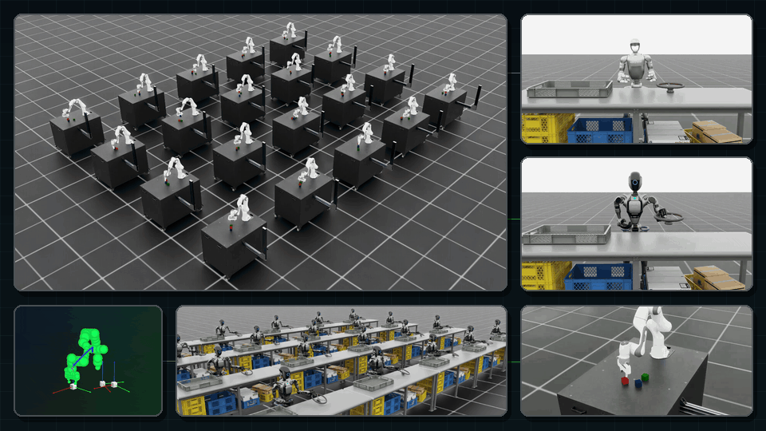
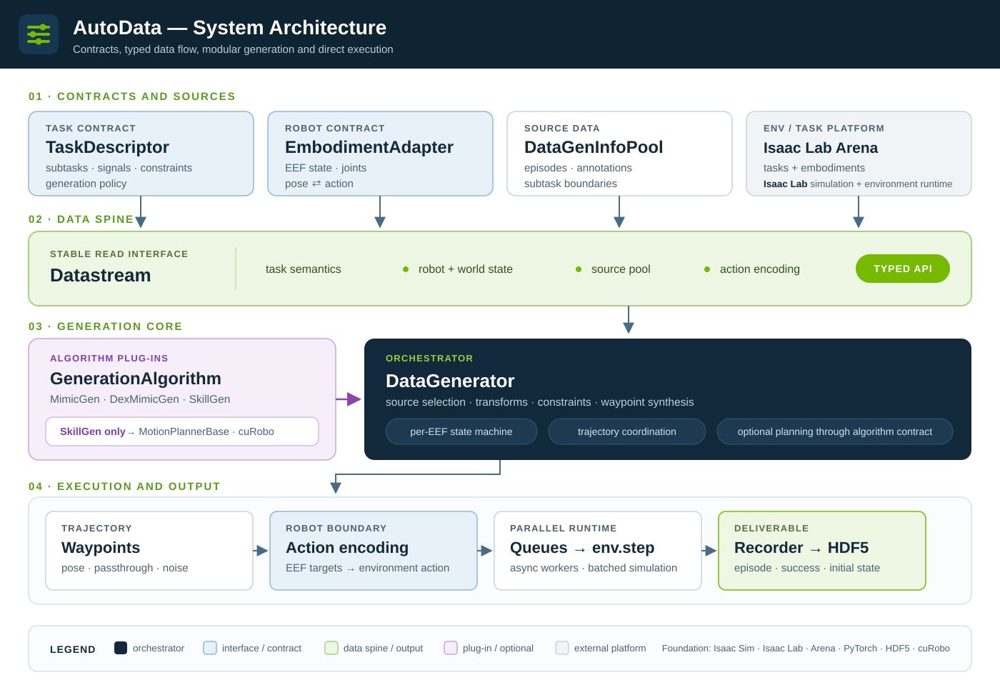

Welcome to Isaac AutoData!#
Isaac AutoData is a trajectory data-generation framework built on top of
Isaac Lab and
Isaac Lab Arena.
Given a handful of annotated human demonstrations, it uses parallel simulation environments to
synthesizes large datasets of new demonstrations by transforming and recombining the human
demonstration segments.
{kind=link}

Isaac AutoData#
The Problem#
Imitation-learning policies are data hungry. They need large, diverse datasets of successful demonstrations, and collecting those by human teleoperation is slow and expensive. Yet most of what a policy needs to learn from a thousand demonstrations is already contained in ten. The same skill, repeated under different object placements.
Isaac AutoData exploits that redundancy. A human demonstration is split into subtasks (each a contiguous segment in which the robot’s end-effector motion is driven by a single reference object). Because each segment is object-relative, it can be transformed to a new scene configuration and replayed. Stitching transformed segments together turns a handful of demonstrations into an arbitrarily large dataset.
Isaac AutoData#
Four pieces cooperate to generate data:
Task descriptor (YAML) — declares the task’s subtasks per end-effector, the boundary signals that separate them, cross-arm constraints, and the generation policy (trial counts, seeding, export behavior). See Task Descriptors.
Embodiment (YAML + adapter) — describes the robot from the generator’s point of view: where to read end-effector poses and how to convert between target poses and the environment’s action vector. See Embodiments.
Datastream — the single read interface the generator uses to observe the world: object poses, end-effector poses, subtask signals, and the pool of annotated source demonstrations. See Datastream.
Generation algorithms — MimicGen (single arm), DexMimicGen (multi-arms), and SkillGen (motion-planned transit). See Generation Algorithms. All three plug into one data generator — see The Data Generator Interface.
{kind=link}

The Isaac AutoData architecture: declarative contracts feed the Datastream read interface, which the data generator and its algorithm plug-ins consume to produce waypoints, actions, and finally recorded HDF5 episodes.#
Usage Example#
Generating a dataset from annotated source demonstrations is a single command:
python scripts/generate_dataset.py \
--viz kit \
--env_name Isaac-Stack-Cube-Franka-IK-Rel-v0 \
--alg mimicgen \
--task_descriptor isaac_autodata_examples/tasks/franka_cube_stack.yaml \
--embodiment isaac_autodata_examples/embodiments/franka_ik_rel.yaml \
--input_file ./datasets/annotated_datasets/dataset_franka_annotated.hdf5 \
--output_file ./datasets/generated_dataset.hdf5 \
--generation_num_trials 100 \
--num_envs 10
To get started, follow the instructions in Installation and run your first generation with Your First Data Generation.
License#
Isaac AutoData is licensed under the Apache License 2.0.
Table of Contents#
Set Up
Getting Started
Example Workflows
Concepts
Advanced
References